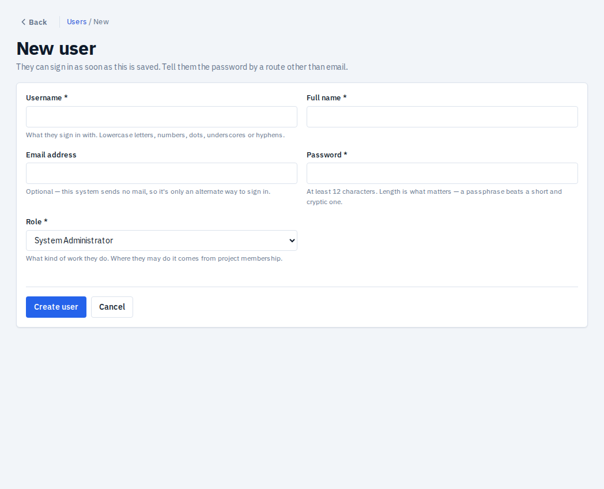
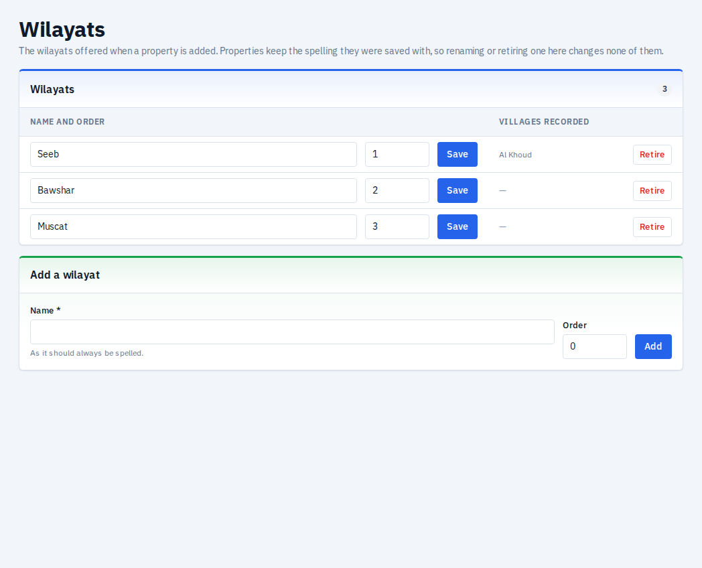
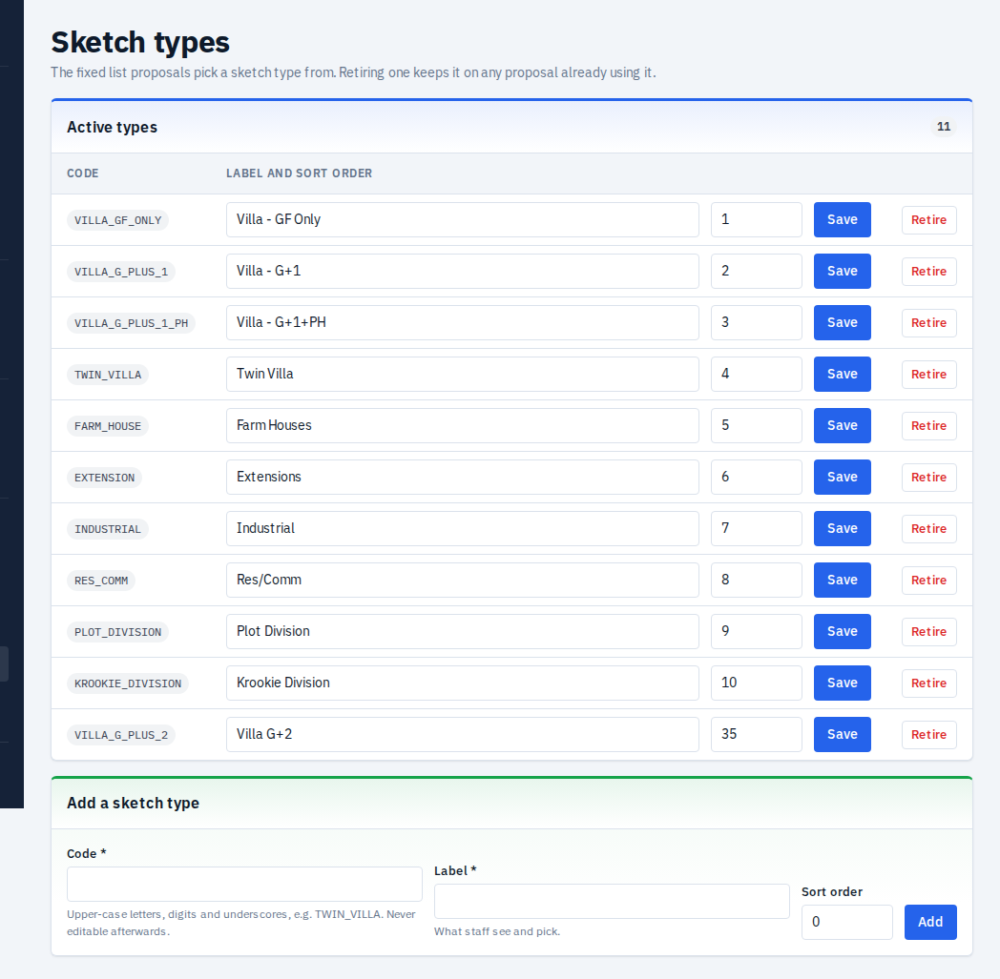
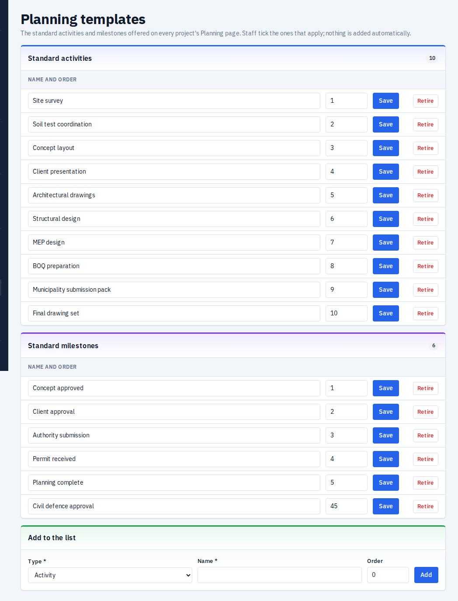
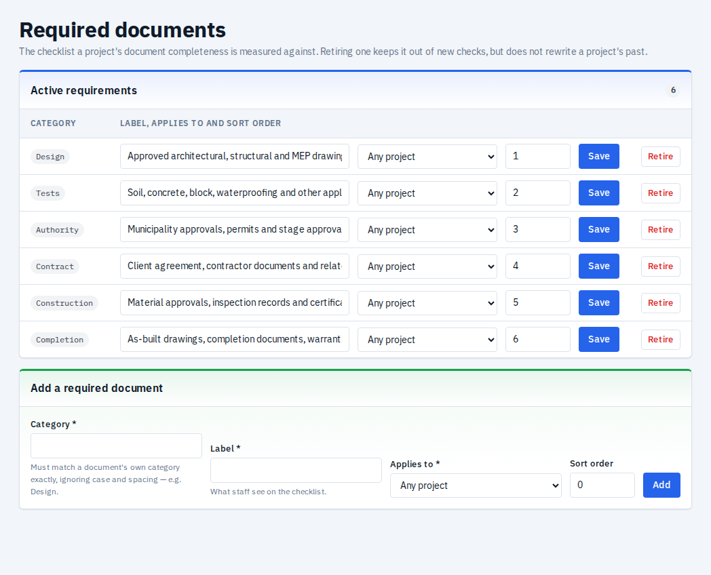
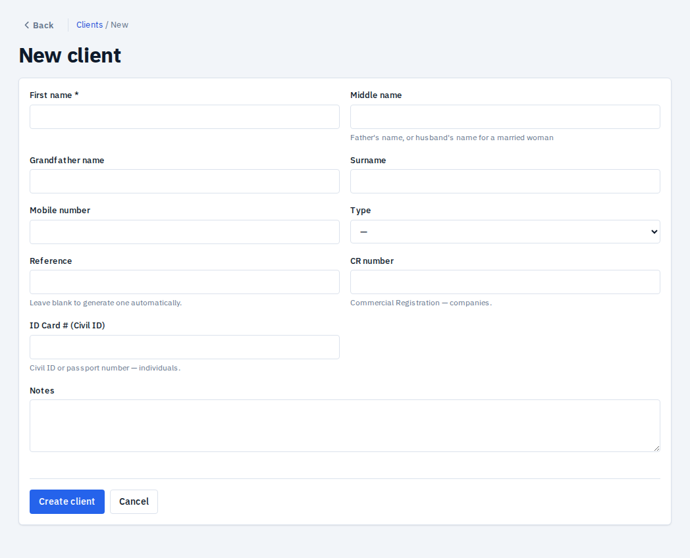
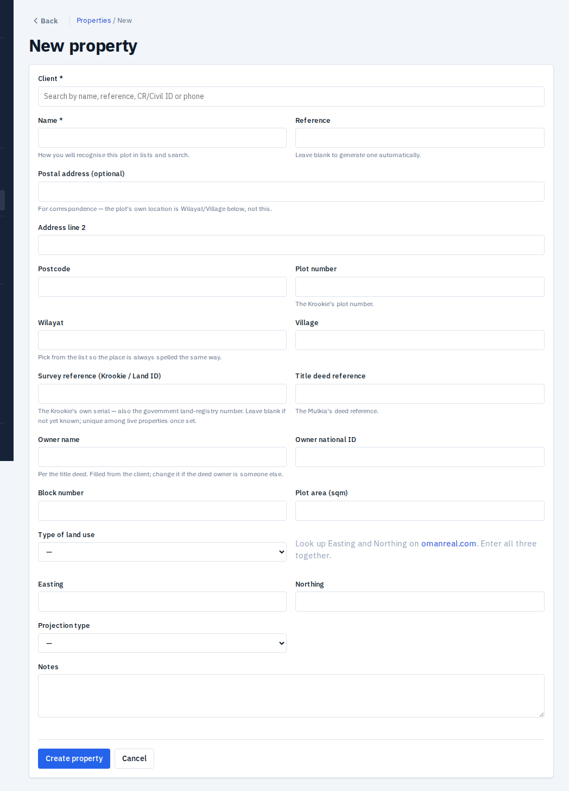
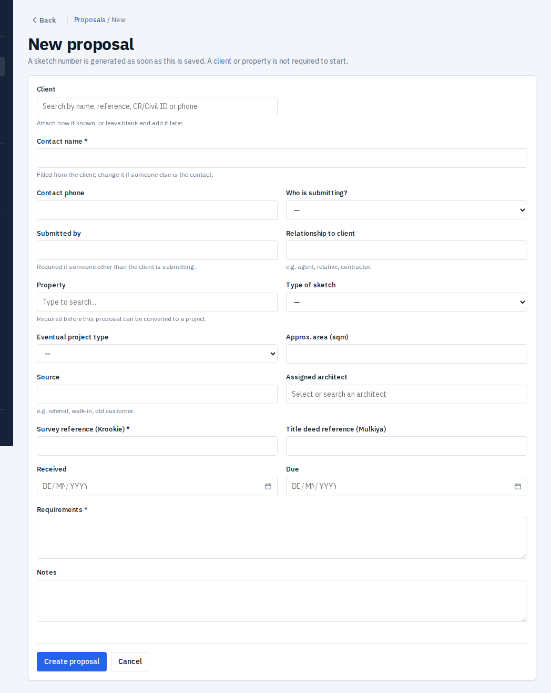
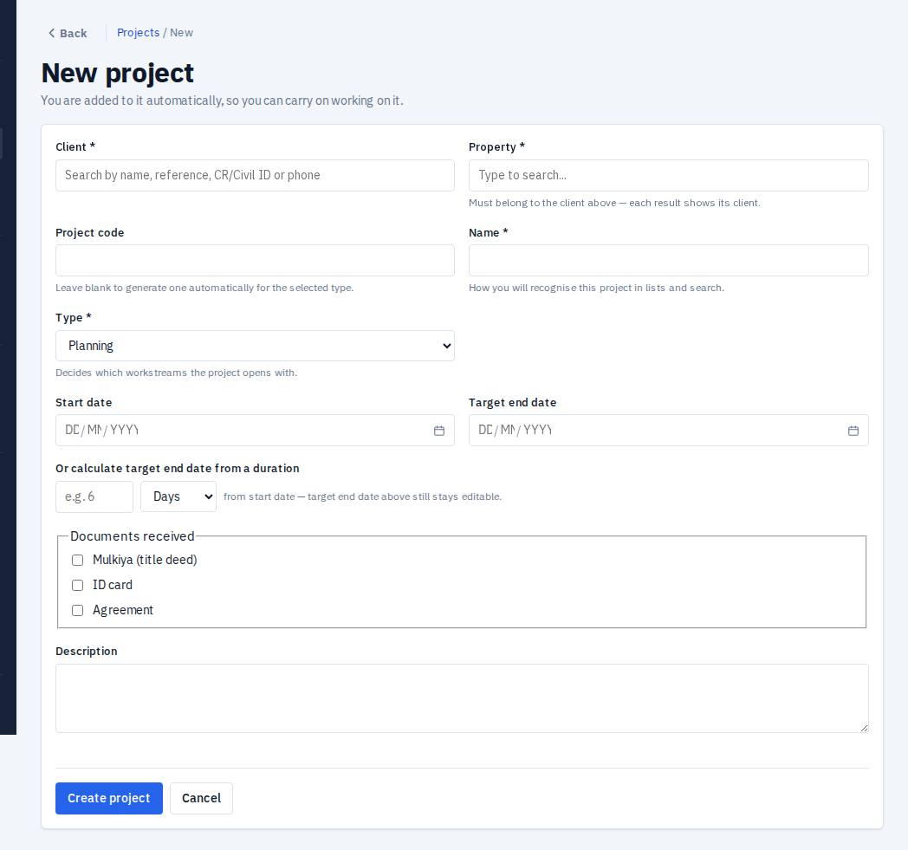
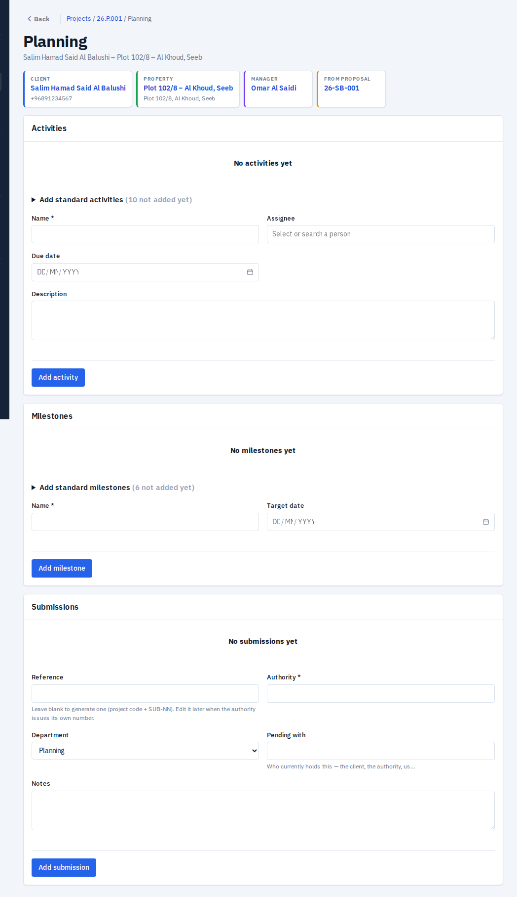

Every screen, every field, with the exact value to type
How to read this guide
| You see | Meaning |
|---|---|
| Red * after a label | Required. The form will not save without it. |
| Blank "Reference" / "Project code" | Leave it blank to get an automatic number (for example CL-2026-001). Only type one if you must match an existing number. |
Date boxes DD MM YYYY | Type the three parts, or use the calendar button. Example: 01 12 2026. |
| "Or calculate target end date from a duration" | Type a number and pick Days / Months / Years. The end date is filled for you from the start date. |
| Search box ("Type to search...") | Type part of a name, reference, CR/Civil ID or phone, then click the result. |
| Status buttons (Activate, Approve...) | Only moves that are legal from the current status are shown, and only if your role allows it. You cannot type a status. |
| "Someone else changed this record. Reload and try again." | Two people edited the same record. Reload the page and repeat your change. |
| Archive | Hides a record but keeps history. Nothing is deleted from the normal screens. |
| Role | Typical person | Main abilities |
|---|---|---|
| System Administrator | IT / office admin | Everything, including users, setup lists, data management. |
| Management / Director | Directors | View everything. Approve submissions and drawings. Override a completion gate with a written reason. Override a duplicate warning. Cannot edit. |
| Project Manager | Project managers | Create clients, properties, proposals (including convert) and projects; manage the project team; close projects. Maintain Wilayats, Sketch types and Planning templates. |
| Planning Team | Architects / planners | Proposals, planning work, drawings. Can approve submissions (not their own). |
| Supervision Team | Site engineers | Site visits, issues, supervision work. |
| Document Controller | Document staff | Upload, edit and archive project documents. Maintain the Required documents list. |
| Client / External Stakeholder | Reserved | Has no permissions yet. Do not assign. |
A user's role says what kind of work they do. Where they can do it comes from project membership: a Project Manager, Planning, Supervision or Document Controller user only sees projects they have been added to.
Staff in the story: admin (System Administrator), fatima.alharthy (Planning Team, assigned architect), omar.saidi (Project Manager), yusuf.rashdi (Supervision Team, site engineer), huda.kindi (Planning Team, second approver), director1 (Director).
Do this once, before the first client is entered. The later stages draw on these lists. Every Setup screen is in the left menu under Setup; you only see the entries your role may open.
| Order | Screen | Who can open it | Why it comes first |
|---|---|---|---|
| 1 | Users | System Administrator | Everyone else needs an account and a role. |
| 2 | Wilayats | System Administrator, Project Manager | Property form pick list. Comes pre-loaded with Oman's wilayats. |
| 3 | Sketch types | System Administrator, Project Manager | Proposal form "Type of sketch". |
| 4 | Planning templates | System Administrator, Project Manager | Standard activities / milestones on the planning page. |
| 5 | Required documents | System Administrator, Document Controller | Drives the document checklist that blocks Close. |
What it is. One account per person. They can sign in as soon as you save. Tell them the password by a route other than email (the system sends no mail).

The New user screen
| Field | Req. | Meaning and rules | Example |
|---|---|---|---|
| Username | * | What they sign in with. Lowercase letters, numbers, dots, underscores or hyphens. 3 to 50 characters. Cannot be changed later. | fatima.alharthy |
| Full name | * | Shown on records, approvals and the audit trail. Up to 200 characters. | Fatima Al Harthy |
| Email address | Optional. Only an alternate way to sign in, since no email is ever sent. Cannot be changed later. | fatima@example.com | |
| Password | * | At least 12 characters. Length matters more than symbols, so a passphrase is fine. | blue-camel-river-42 |
| Role | * | What kind of work they do (see section 1.2). One role at creation; add more on the user page with "Grant role". | Planning Team |
What it is. The list of wilayats offered on the property form. Picking from it keeps spelling identical everywhere, which makes searching and duplicate detection (plot number plus wilayat) reliable.

The Wilayats screen. The Villages recorded column fills in as properties are saved; you never type villages here.
| Field | Req. | Meaning and rules | Example |
|---|---|---|---|
| Name | * | The wilayat exactly as it should always be spelled. Unique. Up to 100 characters. | Seeb |
| Order | Position in the drop-down. Lower comes first. | 1 |
A new system comes pre-loaded with 62 wilayats across all governorates (Muscat, Muttrah, Bawshar, Seeb, Al Amerat, Quriyat, Salalah, Sohar, Nizwa, Sur and so on). For the story nothing needs adding: Seeb is already there. Add a name only if one is missing, or if your office spells one differently. Edit changes Name or Order; Retire hides it from new forms but properties that already use it are unaffected.
Seeb, Quriyat). Check them against the spelling your office uses and rename before properties are entered, because properties keep the spelling they were saved with. A wilayat that is not on the list can still be typed on the property form, but it saves as typed and the form says "Ask an administrator to add it under Setup → Wilayats." Villages need no setup: they are suggested from villages already recorded under that wilayat.What it is. The kinds of sketch a client can ask for. Staff choose one in "Type of sketch" on a proposal. Ten are pre-loaded: Villa GF only, Villa G+1, Villa G+1 with penthouse, Twin villa, Farm house, Extension, Industrial, Residential-commercial, Plot division, Krookie division.

The Sketch types screen
| Field | Req. | Meaning and rules | Example |
|---|---|---|---|
| Code | * | Internal key. Upper-case letters, digits and underscores only. Up to 50 characters. Never editable afterwards. | VILLA_G_PLUS_2 |
| Label | * | What staff see and pick. Editable later. | Villa G+2 |
| Sort order | Position in the drop-down. | 35 |
What it is. Ready-made activity and milestone names. On a project's planning page, "Add standard activities" and "Add standard milestones" show these as tick lists, so staff do not retype them. Pre-loaded: 10 activities (Site survey, Soil test coordination, Concept layout, Client presentation, Architectural drawings, Structural design, MEP design, BOQ preparation, Municipality submission pack, Final drawing set) and 5 milestones (Concept approved, Client approval, Authority submission, Permit received, Planning complete).

The Planning templates screen
| Field | Req. | Meaning and rules | Example |
|---|---|---|---|
| Type | * | Activity (a task) or Milestone (a checkpoint). Cannot be changed afterwards. | Milestone |
| Name | * | Up to 200 characters. Unique within its type. | Civil defence approval |
| Order | Position in the tick list. | 45 |
Templates are only suggestions. Changing or retiring one never changes projects that already used it.
What it is. The checklist of document categories a project must have. The Documents page shows a tick or cross per row, and a project cannot be closed while a required category is missing. Pre-loaded, all "Any project": Design, Tests, Authority, Contract, Construction, Completion.

The Required documents screen. Edit a row and press Save, or press Retire.
| Field | Req. | Meaning and rules | Example |
|---|---|---|---|
| Category | * | Must match the Category typed or picked when someone uploads a document, ignoring capitals and spaces. Cannot be changed afterwards. | Design |
| Label | * | What staff see on the checklist. Up to 200 characters. | Design drawings |
| Applies to | Planning, Supervision, or Any project. A Supervision row applies only to projects that run supervision. | Any project | |
| Sort order | Position on the checklist. | 10 |
Designs will not satisfy Design. Staff should pick from the drop-down on upload rather than typing. Retire a row to stop requiring it.What it is. The person or company we work for. A client owns properties, proposals and projects. Needs client:create (System Administrator, Project Manager).

The New client screen
| Field | Req. | Meaning and rules | Example |
|---|---|---|---|
| First name | * | For a person, their first name. For a company, type the registered name here and leave the other name parts blank. Up to 100 characters. | Salim |
| Middle name | Father's name (or husband's name for a married woman). | Hamad | |
| Grandfather name | Third name part. | Said | |
| Surname | Family or tribe name. The full name shown everywhere is the four parts joined. | Al Balushi | |
| Mobile number | Digits with optional +, at least 8 digits. Used to find duplicates. | +96891234567 | |
| Type | Individual or Company. | Individual | |
| Reference | Leave blank for an automatic number. Unique among live clients. | (blank) → CL-2026-001 | |
| CR number | Commercial Registration, for companies. | (blank for Salim) | |
| ID Card # (Civil ID) | Civil ID or passport number, for individuals. | 12345678 | |
| Notes | Free text, up to 5000 characters. | Prefers WhatsApp contact |
On Save the system looks for the same CR number or Civil ID (a hard stop) or a similar name or the same phone (a warning only). If it finds a match you may open the existing client instead. Only a Director or System Administrator can override a hard stop, and they must give a reason of at least 5 characters, which is stored in the audit trail.
| Field | Req. | Meaning and rules | Example |
|---|---|---|---|
| Name | * | Unique within this client. | Khalid Salim Al Balushi |
| Position | Relationship or job title. | Son | |
| Designation, Place of work | Optional extra details. | Engineer, PDO | |
| ID number | Unique across all contacts. | 87654321 | |
| Email, Phone | Contact details. | +96899887766 | |
| Primary | Tick for the main contact. Only one per client. | Ticked |
CL-2026-001 exists. A client cannot be archived while it still has live properties or any project.What it is. The plot. Each property belongs to one client for good. Needs property:create. You can also arrive here from a proposal with "Add new property"; the form is then pre-filled and you return to the proposal on save.

The New property screen
| Field | Req. | Meaning and rules | Example |
|---|---|---|---|
| Client | * | Search by name, reference, CR/Civil ID or phone. Cannot be changed later. | Salim Hamad Said Al Balushi |
| Name | * | How you will recognise the plot in lists. Click the "Suggestion" link to use "Plot {no} – {village}, {wilayat}". | Plot 102/8 – Al Khoud, Seeb |
| Reference | Blank for automatic. | (blank) → PR-2026-001 | |
| Postal address, Address line 2, Postcode | The mailing address only. The plot's own location is Wilayat and Village below. | PO Box 123, PC 111 | |
| Plot number | The Krookie's plot number. With Wilayat it is used for duplicate detection. | 102/8 | |
| Wilayat | Pick from the list (set up in 2.2). | Seeb | |
| Village | Type or pick from suggestions already used in that wilayat. | Al Khoud | |
| Survey reference (Krookie / Land ID) | The Krookie's serial, also the land-registry number. Unique among live properties; dashes and spaces are ignored when comparing. No override. Needed before a proposal can convert. | KR-2026-004417 | |
| Title deed reference | The Mulkia deed number. | MK-77412 | |
| Owner name, Owner national ID | Per the title deed. Filled from the client; change if the deed owner is someone else. | Salim Hamad Said Al Balushi, 12345678 | |
| Block number | Block as on the deed. | 5 | |
| Plot area (sqm) | Positive number. Use the deed's figure. | 600 | |
| Type of land use | Residential, Commercial, Agricultural, Industrial, Mixed use, Government. | Residential | |
| Easting, Northing, Projection type | Look up on omanreal.com. All three together or none. The point must fall inside Oman. Projections: Clarke 1880 Zone 39 or 40, UTM Zone 39N or 40N. | 625400, 2590100, UTM Zone 40N | |
| Notes | Free text. | Corner plot |
PR-2026-001 is live and linked to the client. If a same-plot, same-wilayat property exists, you get an exact-match warning that only a Director or System Administrator can override.What it is. The enquiry stage, before there is a project. A sketch number is created the moment you save. A client or property is not required to start. Needs proposal:create (Planning Team, Project Manager, System Administrator).

The New proposal screen
| Field | Req. | Meaning and rules | Example |
|---|---|---|---|
| Client | Attach now if known. Choosing one fills Contact name and phone. | Salim Hamad Said Al Balushi | |
| Contact picker | Choose a saved contact of that client. | Khalid Salim Al Balushi | |
| Contact name | * | Who we speak to. | Khalid Salim Al Balushi |
| Contact phone | 8+ digits. | +96899887766 | |
| Who is submitting? | Self (client deals with us) or Other (someone submits on their behalf). | Self | |
| Submitted by, Relationship to client | Needed only when Other, for example agent, relative, contractor. | (blank for Self) | |
| Property | Must belong to the same client and not be archived. Required before convert. | Plot 102/8 – Al Khoud, Seeb | |
| Type of sketch | From the Sketch types list (2.3). | Villa G+1 | |
| Eventual project type | Planning, Supervision, or Planning and supervision. Decides which workstreams the project opens with. | Planning and supervision | |
| Approx. area (sqm) | Rough size; copied to the property form later. | 600 | |
| Source | How the enquiry arrived. | Referral | |
| Assigned architect | A Planning or Project Manager user. | Fatima Al Harthy | |
| Survey reference (Krookie) | * | The Krookie serial. Required to create, and again to convert. | KR-2026-004417 |
| Title deed reference (Mulkiya) | Optional; not checked at convert. | MK-77412 | |
| Received, Due | Dates. A Due date in the past shows an "Overdue" badge. Due becomes the project's target end date on convert. | 01/11/2026, 30/11/2026 | |
| Requirements | * | The client's brief in plain words. Copied to the project description on convert. | G+1 villa, 5 bedrooms, majlis, maid room, 2-car garage |
| Notes | Internal notes. | Client wants a modern facade |
26-SB-001.| Button | From → To | When to use |
|---|---|---|
| Move to concept | New → Concept (also On hold → Concept, shown as Resume) | Design work started. |
| Send for client review | Concept → Client revision | Sketch shown to the client. |
| Approve | Client revision → Approved | Client accepts the sketch. |
| Mark won | Approved → Won | Client signs and wants to proceed. |
| Put on hold | New, Concept, Client revision → On hold | Client paused. |
| Mark lost | Any open status → Lost (final) | Client declined. Cannot be undone. |
Only a Won proposal can convert, by someone with proposal:convert (Project Manager, System Administrator). The "Ready to convert" card lists four checks. A form below it offers only the missing ones.
| Check | How to satisfy it |
|---|---|
| Client attached | Search one, or "Add new client". |
| Property attached | Search one, or "Add new property" (needs the client first). |
| Survey reference (Krookie) | Type it, for example KR-2026-004417. |
| Requirements | Type the brief. |
Press Convert to project. In one step the system creates a numbered project (26.P.001 in our story, named "{client full name} – {property name}", here Salim Hamad Said Al Balushi – Plot 102/8 – Al Khoud, Seeb; you can rename it with Edit), adds you as Project Manager, opens the right workstreams, copies the requirements into the description and the due date into the target end date, and marks the proposal Converted.
Normally a project comes from a converted proposal. You can also create one directly (needs project:create). The creator is added automatically as a team member.

The New project screen
| Field | Req. | Meaning and rules | Example |
|---|---|---|---|
| Client | * | Search. | Salim Hamad Said Al Balushi |
| Property | * | Must belong to that client. Neither may be archived. | Plot 102/8 – Al Khoud, Seeb |
| Project code | Blank for automatic (YY.P.NNN planning, YY.S.NNN supervision). Unique. | (blank) | |
| Name | * | Suggested as "{client} – {property}". | Salim Hamad Said Al Balushi – Plot 102/8 – Al Khoud, Seeb |
| Type | * | Planning, Supervision, or Planning and supervision. Decides the workstreams. | Planning and supervision |
| Start date | Planned start. | 01/12/2026 | |
| Target end date | Cannot be before the start date. Or type a duration. | 01/12/2027 (or 12 Months) | |
| Documents received | Tick Mulkiya (title deed), ID card, Agreement as they arrive. | Mulkiya, ID card | |
| Description | Scope in words. | G+1 villa, 5 bedrooms... |
Same fields as above except client, property and status, which can never be changed. If the project has a Supervision workstream there is also a Supervision details block: Assigned site engineer (Yusuf Al Rashdi), Krookie received (tick), Approved drawings received (tick, "if not done by our company"). A planning-only project that later needs supervision is upgraded from /supervision/new with "Use this project", never by editing Type.
On the project page, Team card. Needs project:manage_members.
| Field | Req. | Meaning | Example |
|---|---|---|---|
| Person | * | An active user. Cannot add the same person twice. | Fatima Al Harthy |
| Role on this project | * | What they do here. Their permissions still come from their own role. | Planning Team |
Add fatima.alharthy (Planning), huda.kindi (Planning), yusuf.rashdi (Supervision). A project must always keep at least one member. Without membership a project-level user gets "not found".
On the Status card press Activate. Draft → Active. The other moves are Put on hold (Active → On hold), Activate again to resume, Mark complete and Close (stage 10).
Needs planning:create / planning:edit (Planning Team, Project Manager). Three cards.

The Planning page: activities, milestones and submissions
Tick "Add standard activities" for template names, or use the form (button Add activity).
| Field | Req. | Meaning | Example |
|---|---|---|---|
| Name | * | The task. Suggestions come from templates and earlier names. | Site survey |
| Assignee | Who does it. | Fatima Al Harthy | |
| Due date | Deadline. | 10/12/2026 | |
| Description | Details. | Topographic survey of the plot |
Use Mark done when finished. Archive hides a wrong entry.
| Field | Req. | Meaning | Example |
|---|---|---|---|
| Name | * | The checkpoint. | Concept approved |
| Target date | Planned date. | 20/12/2026 |
Press Mark reached when it happens; today's date is recorded.
| Field | Req. | Meaning and rules | Example |
|---|---|---|---|
| Reference | Blank for automatic ({project code}-SUB-NN). Edit it later when the authority issues its own number. | (blank) → 26.P.001-SUB-01 | |
| Authority | * | Who we submit to. | Muscat Municipality |
| Department | Planning or Housing (default Planning). | Planning | |
| Pending with | Who holds it right now: client, authority, us. | Us | |
| Notes | Free text. | Resubmission pack v1 |
| Button | Who | Effect |
|---|---|---|
| Submit | planning:edit | Draft → Submitted. |
| Start review | planning:edit | Submitted → Under review. |
| Approve | planning:approve, not the person who created it | Under review → Approved. Needs a Permit reference (for example MM/2027/0456) unless one is already recorded. |
| Reject | planning:approve | Under review → Rejected (final). |
| Return for revision | planning:approve | Back to the team; press Submit again after fixing. |
| Withdraw | planning:edit | Draft or Submitted → Withdrawn (final). |
| Halt / Resume / Cancel | planning:edit | Pause, restart at the status before the pause, or cancel a halted submission. |
Other cards on the page:
| Card | Fields | Example |
|---|---|---|
| Request clarification | Press Request clarification while Under review. Later fill Response and press Record response. Status does not change. | Authority asked for revised setback dimensions |
| Reviews → Log review | Review date *, Reviewer, Response due, Comments. Later fill Response on the row. | 20/01/2027, Eng. Al Lawati, 05/02/2027 |
| Meetings → Log meeting | Scheduled for (date and time), Attendees (names, comma-separated), Required (tick), Purpose. Later fill Outcome on the row. | 25/01/2027 10:00, Eng. Al Lawati, Fatima Al Harthy, ticked, Discuss setback |
fatima.alharthy creates and submits; huda.kindi starts review and approves with permit MM/2027/0456. Status Approved.When all submissions are decided, every milestone is reached and every activity is done, press Start then Complete on the Planning workstream (stage 10).
Needs supervision:create / supervision:edit (Supervision Team, Project Manager).
| Field | Req. | Meaning and rules | Example |
|---|---|---|---|
| Type | * | Monthly or On call. | Monthly |
| Visits allowed | * | Whole number, at least 1. The dashboard warns when the quota nears. | 4 |
| Amount | * | Fee, 0 or more. | 300 |
| Start date | * | When it begins. | 01/03/2027 |
| End date | Optional. | 31/03/2027 | |
| Notes | Free text. | OMR per month |
Renew copies the terms and starts the day after the old end date; you may change visits, amount and dates. An agreement can be renewed only once.
| Form | Fields | Example |
|---|---|---|
| Record site visit | Visit date *, Attendees (type names or add staff from the list), Notes | 10/03/2027, Yusuf Al Rashdi, Khalid Al Balushi, Slab reinforcement inspected |
| Record observation (on the visit) | Description *, Category | Column reinforcement spacing exceeds drawing, Structural |
| Issue instruction (on the visit) | Directive *, Assignee, Due date. Press Mark actioned when done. | Correct spacing before pour, Yusuf Al Rashdi, 12/03/2027 |
From an observation use "Raise issue", or create one from the project's Issues page (needs issue:create).
| Field | Req. | Meaning | Example |
|---|---|---|---|
| Title | * | Short summary. | Rebar spacing non-compliant |
| Description | Details. | Spacing 250 mm vs 150 mm on drawing S-02 | |
| Workstream | * | Only when the project runs both: Planning or Supervision. | Supervision |
| Severity | * | Low, Medium, High, Critical. | High |
| Priority | * | Low, Medium, High. | High |
| Owner, Due date | Who fixes it and by when. | Yusuf Al Rashdi, 15/03/2027 |
Moves: Start work → Mark resolved → Close (needs issue:close); Reopen from Resolved or Closed. While editing, Closure notes can record how it was fixed. Open issues block project completion (supervision) and close.
| Step | Fields | Example |
|---|---|---|
| Register drawing (drawing:create) | Drawing number * (unique in the project), Title * | A-101, Ground floor plan |
| Upload revision (on the drawing) | Revision code * (unique per drawing), File, Notes | P1, PDF file, Issued for approval |
Revision moves: Submit and Start review (drawing:create), then Approve, Reject or Return for revision (drawing:approve: Director, System Administrator). The person who uploaded a revision cannot approve it; someone else must. They may still reject or return their own. A file must be uploaded with the revision; it cannot be added later and a revision without one cannot be approved. A revision with no file that you do not want must be Rejected or Returned for revision: while it sits under review it blocks completing the supervision workstream. Approved revisions never change. To change a drawing, upload the next revision (P2).
| Field | Req. | Meaning and rules | Example |
|---|---|---|---|
| Category | * | Pick "{category} – {label}" so it counts toward the checklist, or "Other..." for photos, reports and the like. | Design |
| Title | * | Up to 200 characters. | Concept design pack |
| Description | Free text. | Rev A, client approved | |
| File | * | Up to 50 MB. | a PDF |
The card at the top reads "Every required document has been uploaded" or "N required document(s) missing", with a tick or cross per category. Editing a document changes only its details; to replace the file upload a new document and archive the old one. Needs document:create / edit / archive.
| Field | Req. | Meaning | Example |
|---|---|---|---|
| Impact area | * | Architecture, Structural or MEP. | Architecture |
| Cost impact | Free text. | +OMR 1,200 | |
| Time impact | Free text. | +1 week | |
| Drawing revision | If raised against one. | A-101 P1 | |
| Site visit observation | If raised from one. | (blank) | |
| What the client is asking for | * | The change request in words. | Enlarge majlis by 12 sqm |
Moves: Submit and Start review (planning:edit), then Approve, Reject or Return for revision (planning:approve). The person who recorded a modification cannot approve it. Pending modifications and unapproved drawings block completing the supervision workstream.
On the project page, Workstreams table: Start (Not started → In progress), then Complete. Complete is disabled until the list below it shows everything met.
| Workstream | Must be true |
|---|---|
| Planning | No submission still in progress (draft, submitted, under review, returned or halted). Every milestone reached. Every activity done. |
| Supervision | No open supervision issue. No drawing revision awaiting a decision. No modification awaiting a decision. |
Press Mark complete once every workstream is Completed. The "Before marking complete" list shows "N of M conditions met", with a Go there link for each gap. The actual end date is recorded.
Client took over remaining snagging directly) and confirm. The reason and the unmet conditions are written to the audit trail.When the status is Completed the Handover card appears. Press Mark done beside each item. Ticks are one-way.
| Item | Meaning |
|---|---|
| Final inspection done | Final site inspection completed. |
| Authority completion documents received | Completion certificate or equivalent. |
| Mandatory tests received | Test reports in hand. |
| As-built drawings received | Final as-built set. |
| Warranties received | Warranty documents. |
| Final report issued | Report delivered to the client. |
Close also needs no open issues and no missing required documents (stage 2.5). When all are clear the Close button turns on. The project manager (project:close) confirms "Closed is final".
For System Administrators only (admin:data). Use only to remove records entered by mistake.
Salim Hamad Said Al Balushi, before the delete button turns on.| Action | System Admin | Director | Project Manager | Planning | Supervision | Doc. Controller |
|---|---|---|---|---|---|---|
| Create client / property | Yes | No | Yes | No | No | No |
| Create / edit proposal | Yes | No | Yes | Yes | No | No |
| Convert proposal | Yes | No | Yes | No | No | No |
| Create project | Yes | No | Yes | No | No | No |
| Edit / close project (own projects) | Yes | No | Yes | No | No | No |
| Manage team | Yes | No | Yes | No | No | No |
| Planning work and submissions | Yes | View | Yes | Yes | View | View |
| Approve submission / modification | Yes | Yes | No | Yes | No | No |
| Approve drawing revision | Yes | Yes | No | No | No | No |
| Supervision work | Yes | View | Yes | View | Yes | View |
| Issues (raise, edit, close) | Yes | View | Yes | View | Yes | View |
| Documents (upload, edit) | Yes | View | Yes | View | View | Yes |
| Archive document | Yes | No | No | No | No | Yes |
| Override completion gate | Yes | Yes | No | No | No | No |
| Override duplicate warning | Yes | Yes | No | No | No | No |
| Users, roles, data management | Yes | View users | View users | No | No | No |
| Item | Path |
|---|---|
| Proposal | New → Concept → Client revision → Approved → Won → Converted. Side exits: On hold, Lost. |
| Project | Draft → Active ↔ On hold; Active → Completed → Closed. |
| Workstream | Not started → In progress ↔ On hold; In progress → Completed. |
| Submission, drawing revision, modification | Draft → Submitted → Under review → Approved / Rejected / Returned for revision (→ Submitted again). Submissions can also be Withdrawn, Halted or Cancelled. |
| Issue | Open → In progress → Resolved → Closed; Reopen possible. |
| You see | Cause and fix |
|---|---|
| Button missing | Your role does not allow it, or the status does not permit it, or you are not on the project team. |
| "Attach a property to this proposal before converting it." / "Add the Krookie survey reference..." / "Record the requirements..." | Fill the item in the "Ready to convert" card. |
| "A record with the same official identity already exists." | Open the existing client or property. Only a Director or System Administrator can override, with a reason. |
| "Another property already uses this survey reference (Land ID)." | Survey reference is unique with no override. Check for a duplicate property. |
| "That property does not belong to the named client." | Pick a property owned by that client. |
| "A permit reference is required to approve this submission." | Type the Permit reference in the Approve card. |
| "You cannot approve a submission (or drawing revision, or modification) you created yourself." | Ask another approver. |
| Drawing: "This revision has no drawing file..." | Upload a new revision with the file, then approve that one. |
| "This cannot be completed yet — some conditions are not met." | Follow the readiness list's Go there links, or ask a Director for an override. |
| "The handover checklist must be complete before this project can be closed." | Tick all six items, close issues, upload missing documents. |
| "This project is closed." | Closed projects are read-only. |
| "That change is not allowed from the current status." | The page is out of date. Reload and use the buttons shown. |
| "This cannot be archived because other records depend on it." | Archive or move the dependent properties or projects first. |
| "You do not have permission to do that." | Ask an administrator to check your role. |
| "Something went wrong. Quote the requestId to support." | Note the request id on screen and report it. |
CL-2026-001, 26-SB-001, 26.P.001) show the pattern; your actual numbers continue from your own sequence.